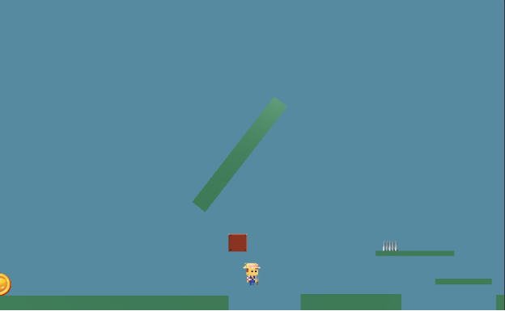
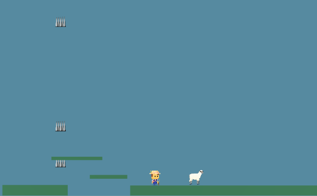

Research/Inspiration
We started the project by discussing the general feel and theme of the game that we wanted to create. Through our discussions we came to an agreement that we wanted to create a game that was similar
to Super Mario in terms of it being a 2d side scroller game. The main idea of the game came from a game with a very similar game concept called Cat mario. The game starts the character (cat) in the very first map of super mario.
Assuming that the player has played that map previously, they will try to traverse through it as normal, but every part of the game has some kind of hidden traps designed to kill the player in very annoying ways.
Themes
The game follows a farmer that wakes up after being kidnapped by his sheep. He finds himself in an unfamiliar section of his farm
where he is forced to find his way back home. What he doesn't know is that his sheep have plotting revenge against him, which will force him to face a series of
traps and obstacles designed to kill him. So far, I think our project has been meeting the absurd part of the game pretty well since it has hidden traps and other mechanics that may seem intuitive for any other game,
but where in ours it will punish you.


Purpose
The overall purpose of our game is creating a game interface that has the perfect balance between challenging yet, addicting.
This is so that the player is faced with a difficult game that will take time and enough. We want to make this game difficult, but not enough so that the players
get frustrated enough to give up and no longer want to play the game. The design of our game follows a basic formula in which following logic and doing things the
way they should will end up punishing the player by either triggering traps, or other mechanics that will attempt to kill the player.
Project Goals
Game Mechanics
- Sheep Attack: Sheep suddenly appears and instantly kills the farmer.
- Falling floor
- Rolling hay bale
- Pitch fork trap
- Jumping Cow
- Falling Bird
- Invisible Objects
- Setting checkpoints
Stage
- Farm
Game Rules
- If a players die before a checkpoint, they start from the begining
- If a player dies after a checkpoint, they start from the checkpoint
- If a player hits an enemy, they die
- If the player falls from the map, they die
- Background doesn't scroll to the left (Prevents the player from going back)
- If the player finds the hidden end goal, the game will end.
Reflection
Some of the obstacles we've faced are that we all barely know how program using unity's most common language C# so it takes quite a while for the objects to act in a way we would
want to because we would have to watch multiple tutorials and combine what we picked up on it since most video does not give us a perfect code for our absurd trap behavior. We dealt with it by splitting
roles on which traps we will make so that one people will not have to do all the coding. I think our team has been working pretty well together, and we've been able to meet a lot of the goals and
mechanics that we wanted to add to our game. In terms of our time management we've done very and we are ahead of our planned schedule which will hopefully give us more time to refine the graphics
and make the overall game feel more smooth.
Feedback
What was your first impression?
Difficult
- It looks really hard
- Hard platformer
- It was really hard to play and it got really annoying
Frustrating/Fun
- Frustrating, but really fun
- Hilarious. Frustrating
- It looks fun to play
- Super tricky, got a lot of laughs
- My first impression of the game was that it was very funny. I think it's a great game
- Cool game, but I felt like I've seen this game from somewhere
Similar to Trap 2
- It seemed a lot like Trap 2 but with more Mario like art.
- It looks like Cat Mario, Trap Adventure 2, and other platformers.
- Reminded me of super Mario on the phone. (it's a new app, I think)
- Definitely reminds me of the average platformer game
Other
- Game has progressed
- I love animals
Describe the objective of the game
Make it to the end
- Avoid the obstacles and make it to the end
- Get past all the traps on the platform
- To get to the end, whatever that end is.
- Trying to get to the end of the game
- Not die and make it to the end
- To get to the end.
- Try to get through the level without dying
- The objective is to get to the end without dying.
- Navigate to the end of the level by learning where the traps are. Trial-by-error.
- To avoid the obstacles and get to the end of the game
- Get to the finish line
- It's a side scroller, and you have to get the farmer to the other end of the map while avoiding all the traps.
- It is like super mario.
- Get to the end?
Other
- To get the coins.
- A farmer runs from a violent sheep. Game is mad hard to make the player quit
How was this game absurdist?
Traps/Obstacles
- There are unforeseen traps and you have to figure out how to avoid them
- Random obstacles
- You do not know where your obstacles are until you die from them.
- This game is absurdist because the obstacles are very random.
- Random obstacles and seems very annoying
- Really hard. traps everywhere.
- It had different traps.
- It is always changing and the traps try to kill you
- Because it frustrates player trying to play the game
Other
- The game is designed to make you fail.
- Because it frustrates player trying to play the game
- I suggested you try to tie it into absurdism more either with narrative themes such as tying it to the Myth of Sisyphus.
- The fact that each move that the player makes is already predetermined and stopped is ridiculous.
- It takes very long, and it switches controls
- Not sure yet. It was ultra difficult in an absurd way
- It's that they made it impossible to move on to the next level
- Unnecessary hard obstacles
What elements do you think could be improved?
Storyline
- Storyline, nothing aside from the gameplay is "absurd."
- Mark's idea of including a narrative
- Make it more absurd with narrative
Length of game
- Making more obstacles and making it longer
- Make the game shorter?
- I think the only thing they need to add is to continue the game longer and adding more.
- More stuff
- Different obstacles
- More traps
- I really want to see this idea pushed further, but pretty awesome how much you've done so far!
- Add complexity and randomness
Make it different from other games
- Just make sure to make it a little different from the Trap 2 game. Like we said in class, maybe add some overarching story line or meta 4th wall break.
- Make it so its different from ones already available online
- Distinguishing it from existing game? I too felt like it was very similar to a game that I saw one of a famous youtuber play.
- It looks like a carbon copy of the other games. Add a new mechanic to make it stand out.
Other
- I think that having someone quit too easily is not fun, make them think theyre gonna win, but make them lose
- I didn't really get the point of the game. Probably to make it a little more clearer.
Describe this game’s appeal
Fun/Appealing
- Pretty fun
- Fun to play, surprises
- Fun to play, unexpecting events make it challenging
- It looks nice, It looks like something I would actually play
- It looks cute and fun to pass time with
- It'd make for a funny YT video at least! :)
Difficult
- It is difficult for player and has a clean design.
- People who like a challenge will like this game
- A difficult game
- It looks like a challenge game. You could brag to people about beating it.
Frustrating
- Might make someone really frustrated
- I think that how frustrating the game is, is part of its appeal.
- Its funny and its frustrating but you wanna beat it
- Very nice in my opinion. I think the design, layout, and the play was pretty cool. Also just from watching, I knew I would get very annoyed while playing this game
Other
- High for people who enjoy platforming games.
- The appeal is very Mario-like and old school. I think it looks very interesting.
Target Audience
People who like challenges
- People who likes challenge, or want a good laugh
- Completionists, people looking for a challenge
- Hardcore gamers with a lot of patience.
- Someone who is very competitive
- The target audience is for people who like this style of game and the element of surprise.
Anyone
- All ages. People who enjoy simple controls
- Anyone
- Anybody
- Anyone
- Anyone
- Anyone.
Others
- People who likes mario type of games. People who likes annoying games
- Teens and children
- Animals who want to rebel, communist pigs named napoleon
If you were to give this game as a gift who would you give it to?
Anyone
- Anyone.Anyone.
- The game is simple and easy to play.
- The fun is in the obstacles and losing
Family
- My siblings.
- My easily angered mom.
- My dad.
- My mom.
- I would give this game to my brother.
Friends
- My friend.
- My friends, because they all like games like this type.
Myself
- Me, I'd play it for fun.
- Myself
Else
- George Orwell
- N/A
- I don’t know
- A streamer O someone I can watch so I can see them struggle through it
Summary
Currently, the impression we got for this game is that it is a 2D platformer that is difficult.
People who would play it would easily become frustrated by the traps that the player would not expect.
Our plan is to not be exactly like existing games like Cat mario and Trap Adventure.
We will design the stage that is unique from those games, and possibly add a story to the game so that it would be more interesting.